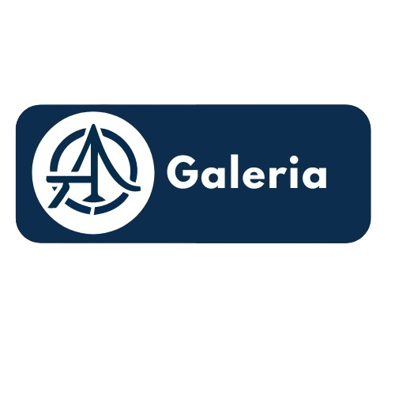
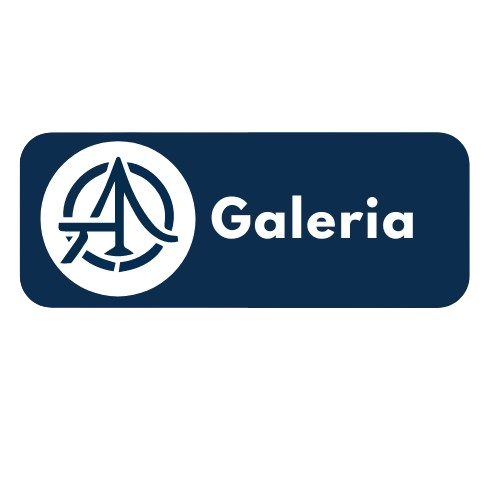

Anderson Orjuela
Orjuela is a creative producer, illustrator and designer. Orjuela began his career in 2020, with his
studies in illustration, hand drawings and scenarios for comic 2021, he began to develop the multimedia production technology which
laid the foundations to practice and form a personal brand.
Throughout their career, they have maintained close ties to the graphic communications industry while expanding into the realm
of art and creative direction.
Orjuela has taken on the role of creative director for a variety of activities, from pop artists to DJs, with projects ranging
from album campaigns to live shows. Notable clients include -------, -----, ------, --------, -------- and ------ --.
ï „Å£ ‚Ä¢ ·¥• ‚Ä¢ î „Å£
AWARDS
UKMVA Award Winning Director 2014 Music Ad Catagory
YCN Professional Awards Studio Moross Design Catagory 2013
ADC Young Guns Award Class of YGX 2012
The Hospital 100 Nominee in association with Time Out 2012
Creative Future Award, Creative Review & Sony 2007
NME Future 50, Number 18 In the future of the Music
JUDGING
Music Video Awards 2013
D&AD Graphic Design Category 2012
D&AD Student Awards 2010
Swatch MTV Playground 2010
Music Video Awards 2011
Grafik Design Awards 2010
Output Award International 2010
VISITING LECTURES
The Cass, 2018
Manchester School of Art 2013
Brighton University 2012
South Downs College 2012
Camberwell College of Art 2012
TALKS, INTERVIEWS + PODCASTS
Semipermanant 2022
Adobe Max 2020
Adobe, Visualising Music 2020
Pictoplasma 2020
Lecture In Progress, Podcast 2019
Forward Festival, Vienna 2018
Adobe Creative Meet Up, London 2017
Design Indaba, Cape Town 2017
Unit Live!, Logan Hall, London 2016
Pentagram, London 2015
Visuelt, Norway 2014
Reasons To, Brighton 2014
Semipermanent, Sydney 2014
The Apple Store, NYC 2014
OFFF Barcelona, May 2014
Lugano, November 2014
Innocent 'Inspires' London October 2013
WLGD, Copenhagen October 2013
Here It's Nice That London June 2013
TYPO Berlin 'Touch' May 2013
OFFSET Festival Dublin 2013
After School Club II, Germany 2013
IKON Gallery Design & Art Symposium 2012
TYPO London 'Social' 2012
Beauty in Making It's Nice That 2012
Graphic Arts Panel, Pick Me Up 2012
Apple Store, 2011
Glug LDN Hosted by UsTwo 2011
D&AD Petcha Kutcha 2011
Design 4 Music, Eye Magazine 2010
What Matters Symposium, LA 2010
D&AD Seminar London 2010
Semi-permanent, NZ 2009
Design Blast HFG, Karlsruhe 2009
PSFK Good Ideas, London 2009
She Says 'Entrepreneurship' 2009
It's Pop It's Art Curated by Airside 2008
Creative Futures Awards Creative Review 2008
Nike Screen Printing Day, It's Nice That 2009
Protein Forum, 2008
SELECTED PRESS
Sunday Times Style, Time Out, Creative Review, Eye Magazine, Grafik, Vogue,
Computer Arts, Groove, Fact, , Pro Design, Nylon, The NME, It's Nice That, 1948,
Design Week, Tate Online, Don't Panic, Dazed & Confused, The New Order, Blu.
SELECTED BOOKS
Graphic 10, Los Logos 4,5 & 6, YCN 0708, The Art Of British Rock,
Graphic 10, Tees The Art of the T-shirt, Visible Signs by David Crow, Create GB, Business Cards 2,
Curly 2008, Bastardised

 
